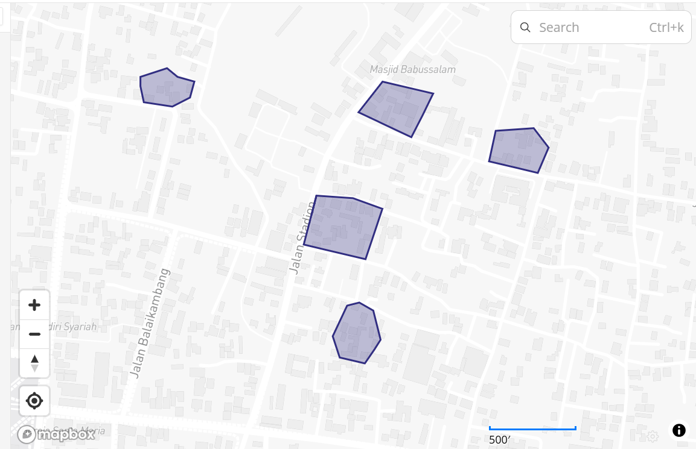
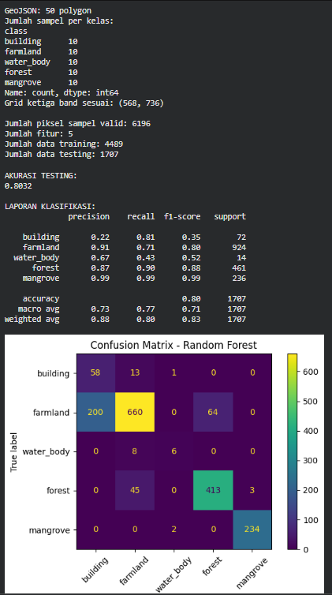
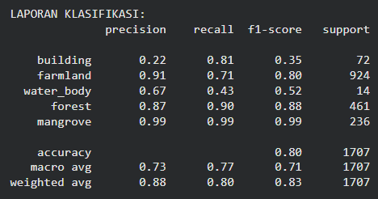
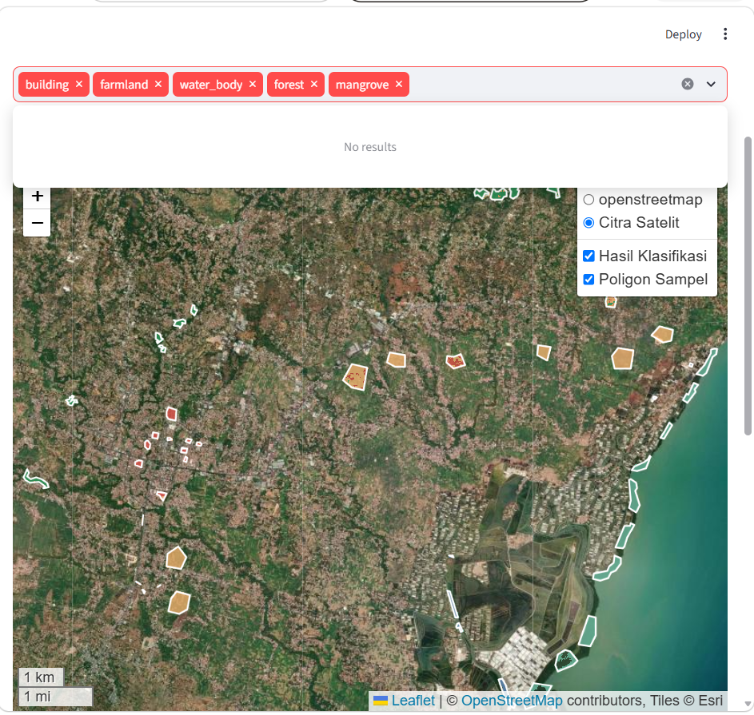

KLASIFIKASI TUTUPAN LAHAN BERBASIS CITRA SATELIT SENTINEL-2 MENGGUNAKAN RANDOM FOREST DI KABUPATEN PAMEKASAN, JAWA TIMUR#
Pengganti UTS — Proyek Sains Data
Informasi |
Keterangan |
|---|---|
Judul proyek |
Klasifikasi Tutupan Lahan |
Wilayah penelitian |
Kabupaten Pamekasan, Jawa Timur |
Sumber citra |
Sentinel-2 Level-2A |
Algoritma |
Random Forest |
Bahasa pemrograman |
Python |
Pengolahan data |
Google Colab |
Visualisasi peta |
Leaflet dan Folium |
Aplikasi web |
Streamlit |
Format data spasial |
GeoJSON dan GeoTIFF |
Aplikasi hasil deployment:
https://mcdgphzwukty3tappd4bpbu.streamlit.app/
1. BUSINESS UNDERSTANDING#
1.1 Latar Belakang#
Tutupan lahan merupakan informasi yang menggambarkan kondisi fisik permukaan bumi, seperti kawasan terbangun, lahan pertanian, badan air, hutan, dan hutan mangrove. Informasi ini penting untuk memahami karakteristik wilayah dan mendukung kegiatan pemantauan lingkungan.
Pengamatan tutupan lahan secara manual dapat membutuhkan waktu dan tenaga, terutama ketika wilayah yang diamati cukup luas. Salah satu pendekatan yang dapat digunakan adalah pemanfaatan citra satelit dan algoritma pembelajaran mesin untuk mengelompokkan piksel berdasarkan karakteristik spektralnya.
Pada proyek ini digunakan citra satelit Sentinel-2 Level-2A sebagai sumber data utama. Informasi spektral dari band B04, B8A, dan B11 dimanfaatkan bersama indeks spektral NDVI dan NDMI sebagai fitur masukan algoritma Random Forest.
Wilayah penelitian berada di Kabupaten Pamekasan, Jawa Timur. Sistem dikembangkan untuk mengklasifikasikan lima kelas tutupan lahan, yaitu bangunan (building), lahan pertanian (farmland), badan air (water body), hutan (forest), dan hutan mangrove (mangrove).
Hasil pengolahan disimpan dalam bentuk raster GeoTIFF dan divisualisasikan di atas peta satelit menggunakan Leaflet. Aplikasi kemudian dipublikasikan melalui Streamlit Community Cloud agar hasil klasifikasi dapat diakses melalui browser.
1.2 Identifikasi Masalah#
Permasalahan yang menjadi dasar pengembangan sistem adalah:
Diperlukan cara untuk mengelompokkan tutupan lahan berdasarkan karakteristik citra satelit.
Lima kelas tutupan lahan memiliki karakteristik permukaan yang berbeda sehingga memerlukan fitur spektral yang sesuai.
Hutan mangrove dan hutan biasa sama-sama memiliki vegetasi, sehingga diperlukan evaluasi kemampuan model dalam membedakan keduanya.
Hasil klasifikasi perlu disajikan dalam bentuk peta agar distribusi spasialnya lebih mudah dipahami.
Pengguna memerlukan antarmuka untuk memilih kelas tutupan lahan tanpa harus membaca data raster secara langsung.
1.3 Tujuan Penelitian#
Tujuan proyek ini adalah:
Mengembangkan model klasifikasi tutupan lahan menggunakan algoritma Random Forest.
Memanfaatkan citra Sentinel-2 Level-2A dengan band B04, B8A, dan B11.
Membentuk fitur tambahan berupa NDVI dan NDMI untuk mendukung klasifikasi.
Mengelompokkan wilayah penelitian menjadi lima kelas tutupan lahan.
Melakukan evaluasi model menggunakan accuracy, precision, recall, F1-score, dan confusion matrix.
Menghasilkan file raster GeoTIFF yang berisi hasil klasifikasi.
Menampilkan hasil klasifikasi di atas peta satelit menggunakan Leaflet.
Menyediakan filter layer agar pengguna dapat memilih kelas tutupan lahan yang ingin ditampilkan.
Menerapkan hasil pengolahan ke aplikasi web menggunakan Streamlit Community Cloud.
1.4 Manfaat#
Manfaat yang diharapkan dari proyek ini meliputi:
Menyediakan visualisasi distribusi tutupan lahan secara spasial.
Membantu pengguna mengamati persebaran lima kelas tutupan lahan.
Menyediakan hasil klasifikasi yang dapat digunakan untuk analisis awal kondisi wilayah.
Menunjukkan penerapan proses sains data dari pengolahan citra hingga penyajian hasil melalui aplikasi web.
1.5 Ruang Lingkup#
Penelitian dibatasi pada wilayah Kabupaten Pamekasan, Jawa Timur, dan lima kelas tutupan lahan. Data sampel awal berasal dari 50 poligon GeoJSON, dengan masing-masing 10 poligon untuk setiap kelas.
Model menggunakan fitur spektral B04, B8A, B11, NDVI, dan NDMI. Algoritma yang digunakan adalah Random Forest dengan 200 pohon keputusan.
Hasil penelitian berupa peta klasifikasi dan aplikasi web interaktif. Hasil model merupakan klasifikasi awal berdasarkan data sampel yang tersedia dan tidak secara otomatis menjadi peta referensi resmi seluruh wilayah.
2. DATA UNDERSTANDING#
2.1 Data Citra Satelit Sentinel-2#
Data citra yang digunakan adalah Sentinel-2 Level-2A. Band yang digunakan dalam pengolahan adalah:
Band |
Nama umum |
Peran dalam proyek |
|---|---|---|
B04 |
Red |
Menyediakan informasi reflektansi kanal merah |
B8A |
Narrow Near Infrared |
Menyediakan informasi reflektansi inframerah dekat |
B11 |
Short-Wave Infrared |
Menyediakan informasi reflektansi inframerah gelombang pendek |
Band tersebut digunakan untuk membentuk fitur yang membantu model membedakan karakteristik permukaan. Perbedaan reflektansi dan indeks spektral dapat membantu proses klasifikasi, tetapi tidak menjamin bahwa semua kelas selalu dapat dipisahkan secara sempurna.
2.2 Data Poligon GeoJSON#
Data sampel disimpan dalam file:
polygon.geojson

File ini berisi geometri poligon dan atribut kelas yang digunakan sebagai label untuk melatih serta menguji model.
Jumlah sampel awal adalah 50 poligon:
Kelas |
Jumlah poligon |
|---|---|
Building |
10 |
Farmland |
10 |
Water body |
10 |
Forest |
10 |
Mangrove |
10 |
Total |
50 |
Poligon digunakan untuk menentukan area yang diketahui kelasnya. Geometri kemudian dirasterisasi agar setiap piksel pada area sampel memiliki label kelas.
Jumlah 50 poligon merupakan jumlah objek sampel, bukan jumlah keseluruhan piksel training dan testing. Satu poligon dapat mencakup banyak piksel.
2.3 Kelas Tutupan Lahan#
Sistem menggunakan lima kelas berikut:
Kode |
Nama kelas |
Deskripsi |
|---|---|---|
1 |
Building |
Bangunan atau kawasan terbangun |
2 |
Farmland |
Lahan pertanian, termasuk area sawah yang diberi label sesuai data sampel |
3 |
Water body |
Laut, danau, sungai, dan perairan lainnya |
4 |
Forest |
Kawasan hutan selain kelas mangrove |
5 |
Mangrove |
Kawasan hutan mangrove |
0 |
NoData |
Piksel yang tidak diklasifikasikan atau tidak valid |
Label tersebut digunakan secara konsisten dalam proses rasterisasi, training-testing, penyimpanan hasil, dan visualisasi.
2.4 Pemeriksaan Awal Data#
Berdasarkan pemeriksaan yang dilakukan sebelumnya, file GeoJSON memiliki 50 poligon dan tidak ditemukan geometri kosong atau tidak valid pada pemeriksaan awal. Sistem koordinatnya adalah EPSG:4326.
Citra band yang digunakan memiliki ukuran raster 736 × 568 piksel. Ketiga band memiliki cakupan koordinat yang sama dengan wilayah poligon yang diperiksa.
Kesamaan ukuran raster dan kesesuaian transformasi spasial penting agar piksel pada ketiga band dapat dibandingkan dan digabungkan sebagai fitur.
3. DATA ACQUISITION#
3.1 Pengumpulan Data#
Data spasial untuk proyek terdiri atas citra satelit dan poligon sampel.
Citra satelit Sentinel-2 Level-2A disediakan dalam bentuk file raster GeoTIFF. File band yang digunakan memiliki nama dengan pola berikut:

2026-10-11-00_00_2026-10-11-23_59_Sentinel-2_L2A_B8A_(Raw).tiff
2026-10-11-00_00_2026-10-11-23_59_Sentinel-2_L2A_B11_(Raw).tiff
2026-10-11-00_00_2026-10-11-23_59_Sentinel-2_L2A_B04_(Raw).tiff
Paket citra sebelumnya diekstrak dari arsip Browser_images.zip ke direktori kerja Google Colab.
Poligon sampel disimpan dalam polygon.geojson, yang digunakan sebagai acuan kelas tutupan lahan.
3.2 File yang Digunakan#
File |
Fungsi |
|---|---|
|
Arsip citra satelit yang digunakan dalam pengolahan |
File band B04 |
Kanal merah |
File band B8A |
Kanal inframerah dekat |
File band B11 |
Kanal inframerah gelombang pendek |
|
Sampel geometri dan label kelas |
|
Hasil akhir klasifikasi raster |
3.3 Tujuan Akuisisi Data#
Akuisisi data dilakukan untuk memperoleh:
Informasi reflektansi permukaan dari citra satelit.
Data sampel yang memiliki label kelas.
Geometri spasial untuk menentukan lokasi sampel.
Data yang dapat diolah menjadi fitur numerik bagi model klasifikasi.
4. DATA PREPARATION#
4.1 Persiapan Lingkungan Pengolahan#
Pengolahan dilakukan menggunakan Python di Google Colab. Beberapa pustaka yang digunakan adalah:
numpyuntuk operasi numerik dan pembentukan fitur.rasteriountuk membaca serta menyimpan raster.geopandasuntuk membaca dan mengelola poligon GeoJSON.scikit-learnuntuk training, testing, dan evaluasi Random Forest.matplotlibuntuk visualisasi confusion matrix.
Contoh impor pustaka:
import numpy as np
import rasterio
import os
from rasterio.features import rasterize
from sklearn.model_selection import GroupShuffleSplit
from sklearn.ensemble import RandomForestClassifier
from sklearn.metrics import (
accuracy_score,
classification_report,
confusion_matrix,
ConfusionMatrixDisplay
)
import matplotlib.pyplot as plt
4.2 Membaca File Band#
Setiap band dibaca sebagai array numerik menggunakan Rasterio. Band B04 juga digunakan untuk memperoleh profil raster, transformasi, dan sistem koordinat yang menjadi acuan penyimpanan hasil.
Contoh kode pembacaan band:
with rasterio.open(b04_path) as src:
red = src.read(1).astype("float32")
profile = src.profile.copy()
transform = src.transform
crs = src.crs
with rasterio.open(b8a_path) as src:
nir = src.read(1).astype("float32")
with rasterio.open(b11_path) as src:
swir = src.read(1).astype("float32")
assert red.shape == nir.shape == swir.shape, \
"Ukuran band berbeda!"
Variabel yang terbentuk:
Variabel |
Isi |
|---|---|
|
Array piksel band B04 |
|
Array piksel band B8A |
|
Array piksel band B11 |
|
Metadata raster untuk penulisan output |
|
Transformasi koordinat raster |
|
Sistem koordinat raster |
Pemeriksaan ukuran memastikan ketiga array memiliki bentuk yang sama sebelum digabungkan.
4.3 Pembentukan NDVI#
NDVI atau Normalized Difference Vegetation Index dihitung menggunakan kanal inframerah dekat dan merah.
Rumus yang digunakan:
NDVI = (NIR − Red) / (NIR + Red)
Pada proyek ini, NIR berasal dari B8A dan Red berasal dari B04.
Kode:
ndvi = np.divide(
nir - red,
nir + red,
out=np.full_like(red, np.nan),
where=(nir + red) != 0
)
Nilai NDVI dapat membantu membedakan karakteristik vegetasi dari beberapa jenis permukaan lain. Interpretasinya tetap dipengaruhi kondisi tutupan lahan, pencahayaan, dan karakteristik citra.
4.4 Pembentukan NDMI#
NDMI atau Normalized Difference Moisture Index dihitung menggunakan kanal inframerah dekat dan inframerah gelombang pendek.
Rumus yang digunakan:
NDMI = (NIR − SWIR) / (NIR + SWIR)
Kode:
ndmi = np.divide(
nir - swir,
nir + swir,
out=np.full_like(red, np.nan),
where=(nir + swir) != 0
)
NDMI digunakan sebagai fitur tambahan untuk membantu membedakan kondisi kelembapan permukaan dan vegetasi.
4.5 Penggabungan Fitur#
Setelah band dan indeks spektral terbentuk, kelimanya digabungkan menjadi satu array fitur.
features = np.stack(
[red, nir, swir, ndvi, ndmi],
axis=-1
)
print("Ukuran fitur:", features.shape)
print("Jumlah fitur:", features.shape[-1])
Model menggunakan lima fitur:
B04 atau
red.B8A atau
nir.B11 atau
swir.NDVI.
NDMI.
Susunan fitur tersebut dipertahankan ketika melatih model maupun melakukan klasifikasi citra.
4.6 Rasterisasi Poligon#
Poligon GeoJSON digunakan sebagai data referensi untuk menghasilkan label piksel. Setiap kelas diberi kode numerik.
class_map = {
"building": 1,
"farmland": 2,
"water_body": 3,
"forest": 4,
"mangrove": 5
}
gdf = gdf.to_crs(crs)
gdf["label"] = gdf["class"].map(class_map)
Geometri dan label kemudian dirasterisasi:
label_shapes = [
(geom, int(label))
for geom, label in zip(
gdf.geometry,
gdf["label"]
)
if geom is not None and not geom.is_empty
]
labels = rasterize(
label_shapes,
out_shape=red.shape,
transform=transform,
fill=0,
dtype="uint8"
)
Piksel bernilai 0 menunjukkan area yang tidak memiliki label kelas pada raster sampel.
4.7 Membuat ID Poligon#
ID poligon dibuat untuk memastikan pemisahan training dan testing dilakukan berdasarkan poligon, bukan secara acak per piksel.
id_shapes = [
(geom, i + 1)
for i, geom in enumerate(gdf.geometry)
if geom is not None and not geom.is_empty
]
polygon_ids = rasterize(
id_shapes,
out_shape=red.shape,
transform=transform,
fill=0,
dtype="int32"
)
Setiap poligon memiliki ID yang berbeda berdasarkan urutannya dalam GeoDataFrame.
4.8 Menyaring Piksel Tidak Valid#
Piksel yang tidak mempunyai label, tidak memiliki ID poligon, memiliki nilai band nol, atau memiliki fitur tidak valid dikeluarkan dari dataset.
valid = (
(labels > 0)
& (polygon_ids > 0)
& (red > 0)
& (nir > 0)
& (swir > 0)
& np.isfinite(features).all(axis=-1)
)
X = features[valid]
y = labels[valid]
groups = polygon_ids[valid]
print("Jumlah sampel:", len(y))
Variabel X berisi fitur numerik, y berisi label kelas, dan groups berisi ID poligon masing-masing sampel.
Berdasarkan output proses sebelumnya, jumlah sampel piksel valid adalah 6.196.
5. TRAINING DAN TESTING#
5.1 Pembagian Dataset#
Dataset dibagi menggunakan GroupShuffleSplit dengan 70% untuk training dan 30% untuk testing.
Metode ini digunakan agar piksel yang berasal dari poligon yang sama tidak tersebar ke training dan testing sekaligus.
splitter = GroupShuffleSplit(
n_splits=100,
test_size=0.30,
random_state=42
)
split_found = False
for train_idx, test_idx in splitter.split(
X, y, groups
):
if (
len(np.unique(y[train_idx])) == 5
and len(np.unique(y[test_idx])) == 5
):
split_found = True
break
if not split_found:
raise ValueError(
"Belum ditemukan pembagian yang memuat "
"kelima kelas di training dan testing."
)
X_train, X_test = X[train_idx], X[test_idx]
y_train, y_test = y[train_idx], y[test_idx]
5.2 Hasil Pembagian#

Berdasarkan output yang diperiksa sebelumnya:
Komponen |
Jumlah |
|---|---|
Total sampel piksel valid |
6.196 |
Sampel training |
4.489 |
Sampel testing |
1.707 |
Poligon training |
35 |
Poligon testing |
15 |
Pemisahan berdasarkan poligon membantu mengurangi risiko kebocoran data antarpiksel yang bertetangga di dalam poligon yang sama.
Walaupun demikian, evaluasi ini masih menggunakan 50 poligon awal. Kemampuan model pada lokasi yang jauh berbeda dari lokasi sampel tetap perlu diuji lebih lanjut.
5.3 Pemeriksaan Jumlah Poligon#
Jumlah poligon dapat diperiksa menggunakan:
train_groups = groups[train_idx]
test_groups = groups[test_idx]
print(
"Jumlah poligon training:",
len(np.unique(train_groups))
)
print(
"Jumlah poligon testing:",
len(np.unique(test_groups))
)
Pemeriksaan per kelas:
for nama, label in class_map.items():
ids_train = np.unique(
train_groups[y_train == label]
)
ids_test = np.unique(
test_groups[y_test == label]
)
print(
nama,
"training:", len(ids_train),
"testing:", len(ids_test)
)
Berdasarkan hasil yang ditampilkan sebelumnya, setiap kelas terwakili dalam training dan testing. Namun, jumlah poligon per kelas pada bagian testing masih relatif kecil, sehingga hasil evaluasi per kelas perlu ditafsirkan secara hati-hati.
6. MODELING: RANDOM FOREST#
6.1 Pemilihan Algoritma#
Random Forest merupakan algoritma pembelajaran mesin yang menggunakan sejumlah pohon keputusan untuk menghasilkan prediksi. Penggabungan prediksi dari banyak pohon dapat membantu model mengenali hubungan nonlinier antara fitur masukan dan kelas target.
Dalam proyek ini, Random Forest digunakan untuk mengklasifikasikan piksel citra ke dalam lima kelas tutupan lahan.
6.2 Konfigurasi Model#
Model menggunakan konfigurasi berikut:
Parameter |
Nilai |
Keterangan |
|---|---|---|
|
200 |
Jumlah pohon keputusan |
|
|
Penyesuaian bobot berdasarkan frekuensi kelas |
|
42 |
Menjaga hasil eksperimen lebih konsisten |
|
-1 |
Memanfaatkan seluruh prosesor yang tersedia |
6.3 Proses Training#
Kode pelatihan model:
model = RandomForestClassifier(
n_estimators=200,
class_weight="balanced",
random_state=42,
n_jobs=-1
)
model.fit(X_train, y_train)
Pada tahap ini, model mempelajari hubungan antara lima fitur spektral dan label tutupan lahan dari data training.
6.4 Proses Testing#
Setelah pelatihan, model digunakan untuk memprediksi data testing.
y_pred = model.predict(X_test)
print(
"Accuracy:",
round(
accuracy_score(y_test, y_pred),
4
)
)
Prediksi dibandingkan dengan label sebenarnya untuk menghitung metrik evaluasi.
7. EVALUATION#
7.1 Metrik Evaluasi#
Evaluasi dilakukan menggunakan beberapa metrik:
Accuracy: proporsi seluruh sampel testing yang diprediksi dengan benar.
Precision: proporsi prediksi suatu kelas yang benar-benar termasuk kelas tersebut.
Recall: proporsi sampel suatu kelas yang berhasil ditemukan oleh model.
F1-score: rata-rata harmonik precision dan recall.
Confusion matrix: tabel perbandingan antara label sebenarnya dan hasil prediksi.
7.2 Hasil Akurasi#
Berdasarkan output Google Colab yang diperiksa:
Metrik |
Hasil |
|---|---|
Sampel testing |
1.707 |
Prediksi benar |
1.371 |
Accuracy |
80,32% |
Nilai accuracy sebesar 80,32% menunjukkan bahwa sekitar 80% sampel piksel testing diprediksi dengan benar pada pembagian data tersebut.
Nilai ini menggambarkan kinerja model pada data testing yang digunakan. Nilai tersebut tidak berarti bahwa 80,32% dari seluruh permukaan Kabupaten Pamekasan pasti terklasifikasi benar.
7.3 Classification Report#
Berikut ringkasan hasil yang ditampilkan pada output sebelumnya.

Kelas |
Precision |
Recall |
F1-score |
|---|---|---|---|
Building |
0,22 |
0,81 |
0,35 |
Farmland |
0,91 |
0,71 |
0,80 |
Water body |
0,67 |
0,43 |
0,52 |
Forest |
0,87 |
0,90 |
0,88 |
Mangrove |
0,99 |
0,99 |
0,99 |
Interpretasi#
Building Precision yang rendah menunjukkan bahwa banyak piksel yang diprediksi sebagai bangunan ternyata berasal dari kelas lain. Model perlu diperbaiki untuk membedakan karakteristik bangunan dengan kelas seperti lahan pertanian.
Farmland Model memiliki precision yang tinggi, tetapi recall lebih rendah. Artinya, prediksi yang diberi label farmland relatif sering benar, tetapi sebagian sampel farmland masih diprediksi sebagai kelas lain.
Water body Recall yang rendah menunjukkan bahwa sebagian sampel perairan belum berhasil dikenali. Kelas ini perlu mendapatkan perhatian, termasuk pemeriksaan kualitas label dan penambahan sampel perairan yang mewakili kondisi berbeda.
Forest Precision dan recall menunjukkan hasil yang relatif seimbang pada data testing yang digunakan. Namun, hasil ini masih perlu diuji dengan sampel tambahan dari lokasi berbeda.
Mangrove Precision dan recall yang tinggi menunjukkan bahwa model berhasil mengenali sampel mangrove pada pembagian testing tersebut. Hasil yang sangat tinggi perlu diperiksa lebih lanjut dengan sampel yang lebih beragam untuk memastikan bahwa model tidak hanya mengenali karakteristik lokasi sampel tertentu.
7.4 Confusion Matrix#
Confusion matrix dibuat dengan kode berikut:
ConfusionMatrixDisplay.from_predictions(
y_test,
y_pred,
labels=[1, 2, 3, 4, 5],
display_labels=[
"Building",
"Farmland",
"Water body",
"Forest",
"Mangrove"
],
xticks_rotation=45
)
plt.tight_layout()
plt.show()
Matriks ini menampilkan jumlah sampel setiap kelas yang diprediksi dengan benar maupun salah.
Berdasarkan output yang sebelumnya diperiksa:
Kelas sebenarnya |
Prediksi benar |
Total sampel testing |
|---|---|---|
Building |
58 |
72 |
Farmland |
660 |
924 |
Water body |
6 |
14 |
Forest |
413 |
461 |
Mangrove |
234 |
236 |
Total |
1.371 |
1.707 |
Angka pada diagonal menunjukkan prediksi yang benar. Nilai di luar diagonal menunjukkan kelas tujuan ketika sampel sebenarnya salah diklasifikasikan.
7.5 Kesimpulan Evaluasi#
Model Random Forest berhasil melakukan klasifikasi pada lima kelas tutupan lahan dengan accuracy pengujian sebesar 80,32%.
Namun, hasil evaluasi memperlihatkan bahwa kemampuan model belum merata pada seluruh kelas. Building memiliki precision yang rendah, sedangkan water body memiliki recall yang rendah.
Perbaikan dapat dilakukan dengan memeriksa label poligon, menambah variasi sampel, meninjau karakteristik spektral setiap kelas, dan menguji model pada area yang berbeda. Dengan demikian, hasil evaluasi dapat menjadi dasar untuk meningkatkan kualitas model sebelum digunakan untuk analisis yang lebih luas.
8. KLASIFIKASI SELURUH CITRA#
8.1 Tujuan Klasifikasi#
Setelah model dilatih dan dievaluasi, model diterapkan pada seluruh piksel citra yang memenuhi kriteria validitas.
Tujuannya adalah menghasilkan peta yang memberikan kode kelas pada piksel-piksel citra, bukan hanya pada area sampel training dan testing.
8.2 Menentukan Piksel Valid#
Kode yang digunakan:
classified = np.zeros(
red.shape,
dtype="uint8"
)
valid_image = (
(red > 0)
& (nir > 0)
& (swir > 0)
& np.isfinite(features).all(axis=-1)
)
Array classified diinisialisasi dengan nilai 0. Nilai tersebut digunakan untuk piksel yang tidak diklasifikasikan.
8.3 Menerapkan Model#
classified[valid_image] = model.predict(
features[valid_image]
).astype("uint8")
Model memprediksi kelas untuk setiap piksel valid. Hasil prediksi dimasukkan ke array classified.
8.4 Menyimpan Hasil dalam GeoTIFF#
output_tif = (
"/content/hasil_klasifikasi_pamekasan.tif"
)
profile.update(
driver="GTiff",
count=1,
dtype="uint8",
nodata=0,
compress="lzw"
)
with rasterio.open(
output_tif,
"w",
**profile
) as dst:
dst.write(classified, 1)
print("Hasil tersimpan:", output_tif)
Hasil klasifikasi disimpan ke:
/content/hasil_klasifikasi_pamekasan.tif
File ini merupakan raster satu band dengan nilai piksel berupa kode kelas. Metadata spasial mengikuti profil raster sumber yang diperbarui untuk penyimpanan hasil.
8.5 Menampilkan File Hasil Klasifikasi#
Untuk memeriksa apakah file berhasil dibuat:
import os
output_tif = (
"/content/hasil_klasifikasi_pamekasan.tif"
)
print("File tersedia:", os.path.exists(output_tif))
if os.path.exists(output_tif):
print(
"Ukuran file:",
round(os.path.getsize(output_tif) / 1024, 2),
"KB"
)
Untuk memeriksa ukuran raster dan sistem koordinat:
with rasterio.open(output_tif) as src:
print("Ukuran raster:", src.width, "x", src.height)
print("Jumlah band:", src.count)
print("CRS:", src.crs)
print("NoData:", src.nodata)
print("Tipe data:", src.dtypes)
Pemeriksaan ini membantu memastikan bahwa file hasil klasifikasi dapat dibaca dan memiliki metadata yang diperlukan untuk visualisasi spasial.
8.6 Ringkasan Nilai Piksel#
Berdasarkan pemeriksaan file sebelumnya, distribusi kode kelas yang tercatat adalah:
Kode |
Kelas |
Jumlah piksel |
|---|---|---|
1 |
Building |
654 |
2 |
Farmland |
2.992 |
3 |
Water body |
356 |
4 |
Forest |
1.220 |
5 |
Mangrove |
2.306 |
Terdapat pula piksel bernilai 0 untuk NoData atau area tanpa klasifikasi.
Angka tersebut merupakan jumlah piksel berdasarkan nilai kelas pada raster, bukan luas lahan dalam satuan hektare. Penghitungan luas memerlukan pertimbangan resolusi citra dan sistem koordinat yang sesuai.
8.7 Mengunduh File GeoTIFF dari Google Colab#
File hasil klasifikasi dapat diunduh dari Google Colab menggunakan:
from google.colab import files
files.download(
"/content/hasil_klasifikasi_pamekasan.tif"
)
File yang diunduh dapat disimpan sebagai arsip hasil pengolahan dan digunakan kembali pada tahap visualisasi.
9. VISUALISASI PETA TUTUPAN LAHAN#
9.1 Tujuan Visualisasi#
Visualisasi dilakukan untuk menyajikan hasil klasifikasi dalam bentuk peta yang mudah dipahami. Raster hasil klasifikasi ditampilkan di atas basemap citra satelit sehingga pengguna dapat membandingkan kelas hasil prediksi dengan kondisi permukaan yang terlihat pada citra.
Visualisasi dibuat menggunakan Leaflet melalui Folium, kemudian diintegrasikan ke aplikasi Streamlit.

9.2 Layer Klasifikasi#
Layer klasifikasi menampilkan lima kelas:
Building.
Farmland.
Water body.
Forest.
Mangrove.
Setiap kelas diwakili warna yang berbeda. Penggunaan warna membantu pengguna membedakan kategori tutupan lahan pada peta.
9.3 Layer Poligon GeoJSON#
Selain raster hasil klasifikasi, poligon sampel ditampilkan sebagai layer terpisah. Poligon ini menunjukkan lokasi sampel yang digunakan dalam pengembangan model.
Layer sampel membantu pengguna memahami bahwa model dibangun berdasarkan area referensi yang telah diberi label.
9.4 Kontrol Layer Leaflet#
Kontrol layer disediakan agar pengguna dapat menampilkan atau menyembunyikan layer tertentu. Pada aplikasi yang dibuat, pengguna juga dapat memilih kelas melalui filter.
9.5 Contoh Kode Visualisasi Raster Hasil Klasifikasi#
Potongan berikut merupakan contoh untuk menampilkan raster hasil klasifikasi di Google Colab. Gunakan screenshot output dari notebook sebagai bukti hasil.
import rasterio
import numpy as np
import matplotlib.pyplot as plt
from matplotlib.colors import ListedColormap
from matplotlib.patches import Patch
output_tif = "/content/hasil_klasifikasi_pamekasan.tif"
with rasterio.open(output_tif) as src:
hasil = src.read(1)
print("Ukuran raster:", src.width, "x", src.height)
print("CRS:", src.crs)
warna = ListedColormap([
"#d73027", # Building
"#fdae61", # Farmland
"#4575b4", # Water body
"#1a9850", # Forest
"#66c2a5" # Mangrove
])
plt.figure(figsize=(12, 7))
plt.imshow(
np.ma.masked_equal(hasil, 0),
cmap=warna,
vmin=1,
vmax=5,
interpolation="nearest"
)
plt.legend(handles=[
Patch(facecolor="#d73027", label="Building"),
Patch(facecolor="#fdae61", label="Farmland"),
Patch(facecolor="#4575b4", label="Water body"),
Patch(facecolor="#1a9850", label="Forest"),
Patch(facecolor="#66c2a5", label="Mangrove")
], loc="upper right")
plt.title("Klasifikasi Tutupan Lahan - Pamekasan")
plt.axis("off")
plt.tight_layout()
plt.show()
10. IMPLEMENTASI APLIKASI STREAMLIT#
10.1 Tujuan Aplikasi#
Aplikasi Streamlit dibuat untuk menyajikan hasil klasifikasi dalam bentuk peta interaktif yang dapat diakses melalui browser.
Aplikasi menggabungkan raster hasil klasifikasi, poligon sampel, basemap, legenda, dan kontrol filter kelas dalam satu antarmuka.
10.2 Komponen Aplikasi#
Komponen utama aplikasi meliputi:
Judul aplikasi klasifikasi tutupan lahan.
Peta dasar citra satelit.
Overlay hasil klasifikasi.
Layer poligon GeoJSON.
Legenda kelas.
Kontrol layer dan filter kelas.
Navigasi peta berupa zoom dan pergeseran.
10.3 File yang Diperlukan#
Aplikasi menggunakan file utama dan data pendukung berikut:
File |
Fungsi |
|---|---|
|
Kode utama aplikasi Streamlit |
|
Daftar pustaka Python |
|
Raster hasil klasifikasi |
|
Poligon sampel tutupan lahan |
Contoh isi requirements.txt:
streamlit
rasterio
geopandas
numpy
folium
matplotlib
streamlit-folium
10.4 Struktur Kode Streamlit#
Kode di bawah ini cuntuk menunjukkan pola pemuatan data dan filter kelas.
import streamlit as st
import rasterio
import geopandas as gpd
import numpy as np
import folium
from folium.raster_layers import ImageOverlay
from streamlit_folium import st_folium
from matplotlib.colors import to_rgb
from rasterio.warp import transform_bounds
st.set_page_config(
page_title="Klasifikasi Tutupan Lahan Pamekasan",
page_icon="🌍",
layout="wide"
)
st.title("Klasifikasi Tutupan Lahan Pamekasan")
st.write(
"Pemetaan tutupan lahan menggunakan citra Sentinel-2 "
"dan algoritma Random Forest."
)
RASTER_PATH = "hasil_klasifikasi_pamekasan.tif"
GEOJSON_PATH = "polygon.geojson"
KELAS = {
1: "building",
2: "farmland",
3: "water_body",
4: "forest",
5: "mangrove"
}
WARNA = {
1: "#d73027",
2: "#fdae61",
3: "#4575b4",
4: "#1a9850",
5: "#66c2a5"
}
@st.cache_data
def baca_raster(path):
with rasterio.open(path) as src:
data = src.read(1)
batas = src.bounds
crs = src.crs
transformasi = src.transform
nodata = src.nodata
if crs is None:
raise ValueError("CRS raster tidak ditemukan.")
batas_geo = transform_bounds(
crs,
"EPSG:4326",
batas.left,
batas.bottom,
batas.right,
batas.top
)
return data, batas_geo, nodata
@st.cache_data
def baca_geojson(path):
data = gpd.read_file(path)
if data.crs is None:
raise ValueError(
"CRS GeoJSON tidak ditemukan. "
"Pastikan file GeoJSON memiliki informasi CRS."
)
return data.to_crs("EPSG:4326")
try:
hasil, batas_geo, nodata = baca_raster(RASTER_PATH)
poligon = baca_geojson(GEOJSON_PATH)
except Exception as e:
st.error("Data belum berhasil dibaca.")
st.code(str(e))
st.info(
"Pastikan app.py, file GeoTIFF, dan polygon.geojson "
"berada di folder proyek yang sama."
)
st.stop()
st.subheader("Pilih Kelas Tutupan Lahan")
pilihan = st.multiselect(
"Pilih kelas yang ingin ditampilkan pada peta:",
options=list(KELAS.values()),
default=list(KELAS.values())
)
rgba = np.zeros(
(hasil.shape[0], hasil.shape[1], 4),
dtype=np.uint8
)
for kode, nama in KELAS.items():
if nama not in pilihan:
continue
mask = hasil == kode
rgb = np.array(to_rgb(WARNA[kode])) * 255
rgba[mask, 0] = int(rgb[0])
rgba[mask, 1] = int(rgb[1])
rgba[mask, 2] = int(rgb[2])
rgba[mask, 3] = 180
if nodata is not None:
rgba[hasil == nodata, 3] = 0
left, bottom, right, top = batas_geo
tengah = [
(bottom + top) / 2,
(left + right) / 2
]
peta = folium.Map(
location=tengah,
zoom_start=12,
tiles="OpenStreetMap",
control_scale=True
)
# Layer citra satelit.
folium.TileLayer(
tiles=(
"https://server.arcgisonline.com/ArcGIS/rest/services/"
"World_Imagery/MapServer/tile/{z}/{y}/{x}"
),
attr="Tiles © Esri",
name="Citra Satelit",
overlay=False,
control=True
).add_to(peta)
# Layer hasil klasifikasi.
ImageOverlay(
image=rgba,
bounds=[[bottom, left], [top, right]],
opacity=1,
name="Hasil Klasifikasi",
interactive=False,
cross_origin=False,
zindex=2
).add_to(peta)
kolom_kelas = None
for nama_kolom in ["kelas", "class", "label", "Class", "Kelas"]:
if nama_kolom in poligon.columns:
kolom_kelas = nama_kolom
break
if kolom_kelas is not None:
poligon_tampil = poligon[
poligon[kolom_kelas].astype(str).isin(pilihan)
]
if not poligon_tampil.empty:
folium.GeoJson(
poligon_tampil,
name="Poligon Sampel",
tooltip=folium.GeoJsonTooltip(
fields=[kolom_kelas],
aliases=["Kelas:"]
),
style_function=lambda feature: {
"color": "#ffffff",
"weight": 2,
"fillOpacity": 0.08
}
).add_to(peta)
folium.LayerControl(collapsed=False).add_to(peta)
peta.fit_bounds([
[bottom, left],
[top, right]
])
st.subheader("Peta Interaktif")
st_folium(
peta,
key="peta_pamekasan",
height=600,
use_container_width=True,
returned_objects=[]
)
st.subheader("Legenda Kelas")
kolom = st.columns(5)
for i, (kode, nama) in enumerate(KELAS.items()):
if nama in pilihan:
with kolom[i]:
st.markdown(
f"<span style='color:{WARNA[kode]};"
f"font-size:24px'>■</span> **{nama}**",
unsafe_allow_html=True
)
st.subheader("Ringkasan Hasil Klasifikasi")
total = int(np.count_nonzero(np.isin(hasil, list(KELAS.keys()))))
st.metric("Total piksel terklasifikasi", f"{total:,}")
for kode, nama in KELAS.items():
if nama in pilihan:
jumlah = int(np.count_nonzero(hasil == kode))
st.write(f"**{nama}:** {jumlah:,} piksel")
st.caption(
"Peta menampilkan hasil klasifikasi dari file GeoTIFF. "
"Akurasi model perlu dinilai menggunakan hasil testing."
)
Kode tersebut memperlihatkan struktur dasar Streamlit, pembacaan GeoJSON dan raster, serta kontrol pilihan kelas.
10.5 Deployment#
Aplikasi dipublikasikan melalui Streamlit Community Cloud dan terhubung ke repository GitHub.
Alamat aplikasi:
https://mcdgphzwukty3tappd4bpbu.streamlit.app/
Deployment memungkinkan aplikasi dijalankan melalui alamat web tanpa pengguna harus menjalankan notebook Google Colab atau kode Streamlit secara manual di komputer mereka.
10.6 Pengujian Aplikasi#
Pengujian antarmuka dilakukan dengan membuka aplikasi yang sudah dipublikasikan dan memeriksa komponen berikut:
Komponen |
Hasil pemeriksaan |
|---|---|
Judul aplikasi |
Tampil |
Peta satelit |
Tampil |
Overlay hasil klasifikasi |
Tampil |
Layer poligon sampel |
Tampil |
Filter lima kelas |
Dapat digunakan |
Deployment online |
Berhasil menampilkan aplikasi |
Pemeriksaan ini merupakan pengujian fungsi antarmuka. Pemeriksaan tersebut berbeda dari pengujian akurasi model yang dilakukan melalui data testing.
11. BUSINESS FLOW: ALUR PENGOLAHAN#
Alur utama proyek dapat diringkas sebagai berikut:
Pengumpulan data Sentinel-2
|
v
Persiapan file band B04, B8A, B11
|
v
Pembacaan citra dan metadata
|
v
Pembentukan fitur
B04, B8A, B11, NDVI, NDMI
|
v
Pembacaan dan rasterisasi GeoJSON
|
v
Penyaringan piksel valid
|
v
Pembagian training-testing
berdasarkan ID poligon
|
v
Training Random Forest
|
v
Evaluasi model
Accuracy, precision, recall,
F1-score, confusion matrix
|
v
Klasifikasi seluruh piksel valid
|
v
Penyimpanan GeoTIFF
|
v
Visualisasi Leaflet
|
v
Deployment Streamlit
Alur ini menunjukkan tahapan dari pengumpulan data hingga penyajian hasil klasifikasi melalui aplikasi web.
12. KESIMPULAN#
Proyek ini mengembangkan prototipe klasifikasi tutupan lahan berbasis citra Sentinel-2 Level-2A di Kabupaten Pamekasan, Jawa Timur. Model Random Forest dibangun menggunakan lima fitur, yaitu B04, B8A, B11, NDVI, dan NDMI.
Data sampel awal berasal dari 50 poligon GeoJSON yang dibagi menjadi data training dan testing berdasarkan ID poligon. Hasil pengujian awal menghasilkan accuracy sebesar 80,32% pada 1.707 sampel piksel testing.
Model diterapkan pada piksel citra yang memenuhi kriteria validitas, kemudian hasilnya disimpan dalam file hasil_klasifikasi_pamekasan.tif. Hasil klasifikasi dan poligon sampel ditampilkan di atas peta satelit melalui aplikasi Streamlit yang menyediakan kontrol layer dan filter kelas.
Secara keseluruhan, proyek telah mengimplementasikan rangkaian pengolahan data, pembentukan fitur, training-testing, evaluasi model, klasifikasi raster, visualisasi spasial, dan deployment web. Namun, hasil klasifikasi masih perlu ditingkatkan melalui penambahan sampel yang representatif dan evaluasi lanjutan, khususnya untuk kelas building dan water body.